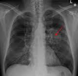

Рак легень — це злоякісне новоутворення легень, що посідає перше місце серед всіх злоякісних пухлин. Рак легень може характеризуватись локальним метастазуванням в прилеглі тканинах або інші органи (віддалені метастази). Більшість типів раку легень (так звані первинні ракові захворювання легень) — це карциноми, тобто утворюються з епітеліальних клітин. Основними видами раку є дрібноклітинний рак легені (ДРЛ), також відомий як вівсяноклітинний рак, та недрібноклітинний рак легені (НДРЛ). Найбільш поширені симптоми захворювання — кашель (в тому числі з кровохарканням), втрата ваги та задишка.Найбільш поширеною причиною раку легень є тривалий вплив тютюнового диму, внаслідок дії якого діагностується 80—90% карцином. Серед хворих, які не палять, припадає 10—15% випадків раку легень. Причинами захворювання в цьому разі часто називають поєднання генетичних факторів,впливу газу радону,дія азбесту, забруднення повітря іншими канцерогенами, а також пасивне паління. Рак легень можна визначити на рентгенограмі грудної клітини та комп'ютерній томографії. Діагноз підтверджують за допомогою біопсії, яку зазвичай роблять при бронхоскопії. Лікування та його довгострокові результати залежать від типу раку, його стадії (ступеня поширення) та загального стану здоров'я людини, що оцінюється за допомогою показника загального стану пацієнта.
Загальні методи лікування включають хірургію, хіміотерапію та променеву терапію. НДРЛ іноді лікують за допомогою хірургічного втручання, а ДРЛ краще піддається лікуванню хіміотерапією та променевою терапією.Загалом, 15% пацієнтів з раком легень у Сполучених Штатах Америки виживають через п'ять років після постановки діагнозу. Рак легень є найпоширенішою причиною смертності від онкологічних захворювань у чоловіків та жінок у всьому світі. Кожен рік він забирає життя 1,38 мільйона людей. Дані приведені станом на 2008 рік.[11]
На рак легень можуть вказувати наступні ознаки та симптоми:
респіраторні симптоми: кашель, кровохаркання, хрипи чи задишка
системні симптоми: втрата ваги, лихоманка, погрубшання фалангів пальців, а також перевтома.
симптоми, викликані місцевим здавлюванням: болі в грудях, болі в кістках, синдром верхньої порожнистої вени, труднощі при ковтанні
Якщо ракова пухлина розвивається в дихальних шляхах, вона може перешкоджати проходженню повітря, викликаючи труднощі під час дихання. Перешкода диханню може призвести до накопичення секрету за закупоркою, що може спричинити пневмонію.
Залежно від типу пухлини до хвороби можуть привернути увагу так звані паранеопластичні явища. У випадку раку легень ці явища можуть включати міастенічний синдром Ламберта-Ітона (слабкість м'язів через автоімунні антитіла), гіперкальціємію чи синдром неадекватної секреції антидіуретичного гормону. Пухлина у верхній частини легені, також відома як пухлина Панкоста, може вразити місцеву частину симпатичної нервової системи та призвести до виникнення синдрому Горнера (опущення повіка та звуження зіниці), а також до ураження плечового нервового сплетіння.[1] розвитку раку легень на 14%. Забруднення атмосферного повітря є причиною виникнення раку в 1-2% випадків.